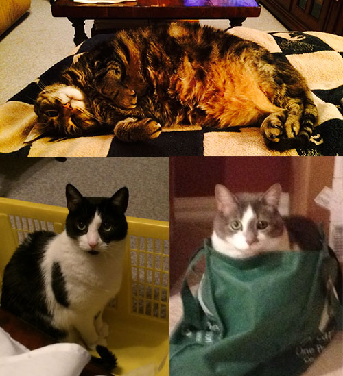

November 2014

Our babies are Precious, the gray and white one in the bag, Bandit, the black and white one and Baby Diddles. Baby Diddles is the oldest at 14, Bandit is 13 and Precious is 7 years old. Baby Diddles was so skittish when we got her that she rarely allowed anyone to touch her, however, in the past year, she has discovered the joy of being petted and comes over every evening to sit on the couch and get fussed over. Bandit loves to use his owners as furniture and enjoys chasing Precious around the house and tackling her. Precious has a morning routine that includes slowing her daddy’s morning routine down because she shouts at him when it is time to pick her up, then she gets in his sink and won’t let him shave until she has been properly payed attention to. |